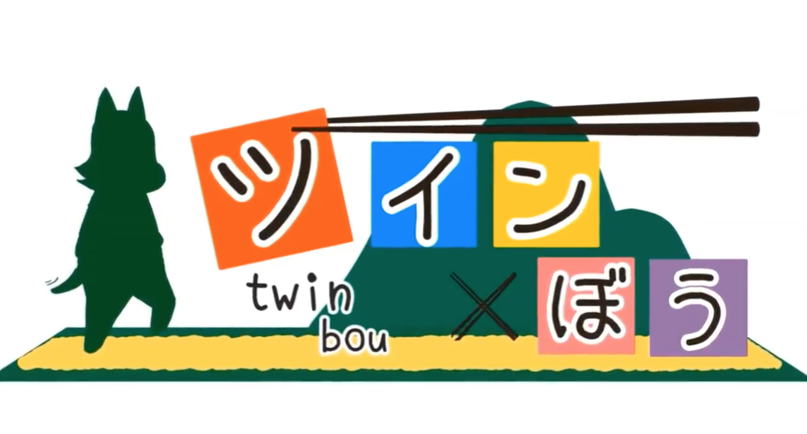
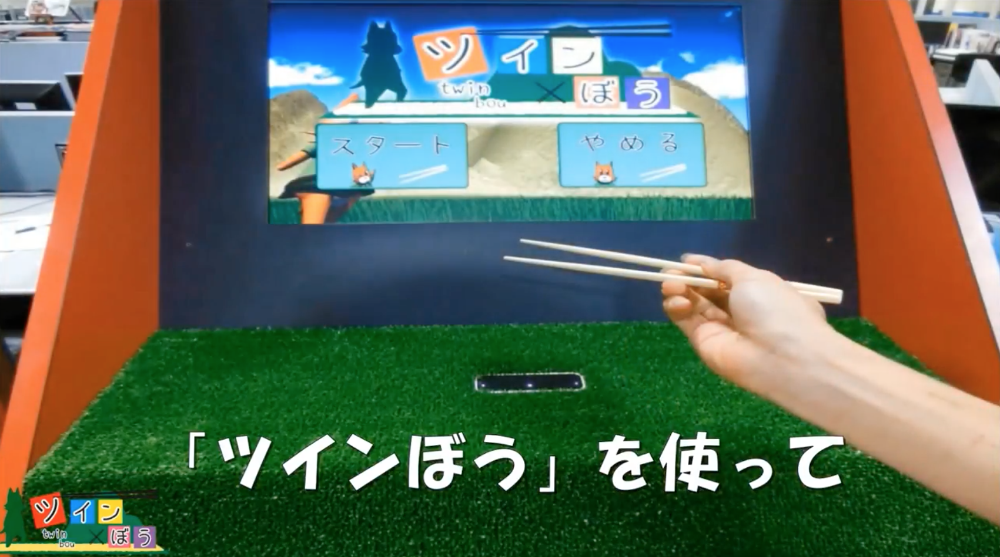
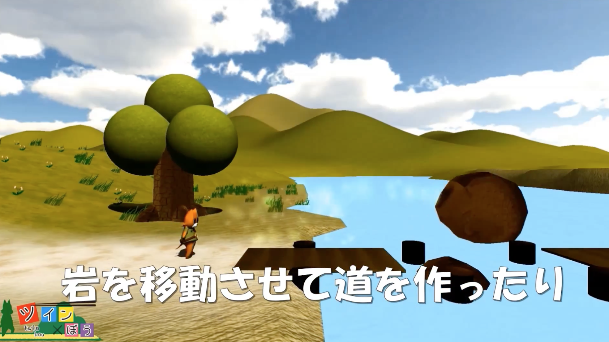
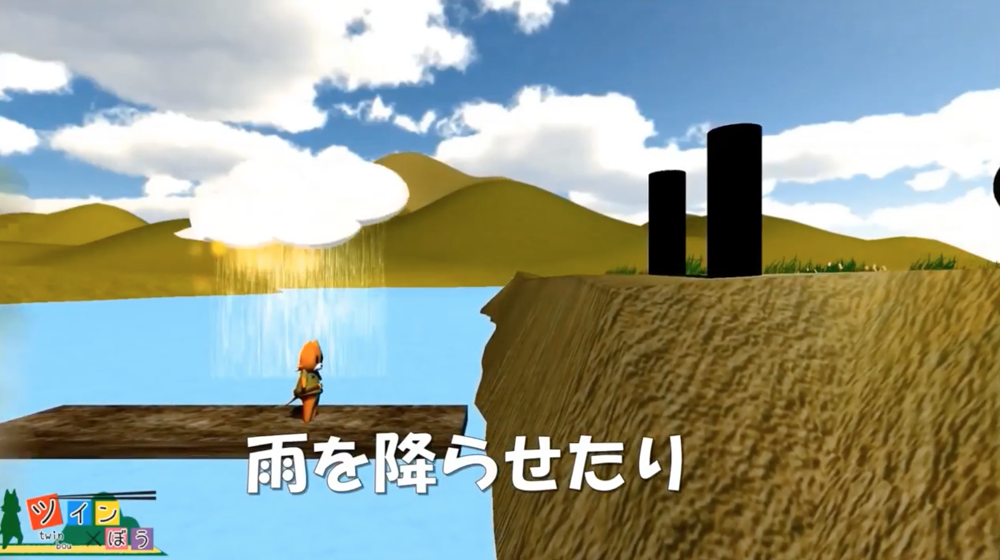

ツイン×ぼう(2013~2014,筐体ゲーム,共同制作)




担当部分
企画(一部)、背景デザイン(ステージの一部)、サウンド制作/サウンドデザイン(全般)
概要/趣旨
キャラクターの操作に箸を使うことによって、新しい操作感を楽しむことができる2D横スク
ロールの卓上アクションゲームです。行く手をふさぐ敵や障害物を箸で取り除いて主人公の
コタローをゴールに導きます。(東京ゲームショウ2014,大学ブースにて出展)
制作に当たって考えたこと
手のジェスチャーによって直接的に物体を操作するゲームは多くあるが、敢えて箸(ツインぼ
う)を用いることによって独特の操作感を持つゲーム体験ができるのではないかと考え、仕様
を策定しました。担当した一部のステージ背景については、Unityのアセットを組み合わせて
木や草のオブジェクトを作成しました。サウンドに関しては、対象年齢が小学校低学年である
ことを考慮して、RPGゲームや児童向けアニメをイメージした楽曲を
作成した。その際、ゲー
ムの明るく朗らかな世界観に一致するよう、極力シンセサイザーなどの合成音の音色は用いず
に、管楽器や弦楽器など生の楽器の音色を用いるよう意識しました。
開発環境
Unity(C#)
LeapMotion
Cubase(打ち込み)